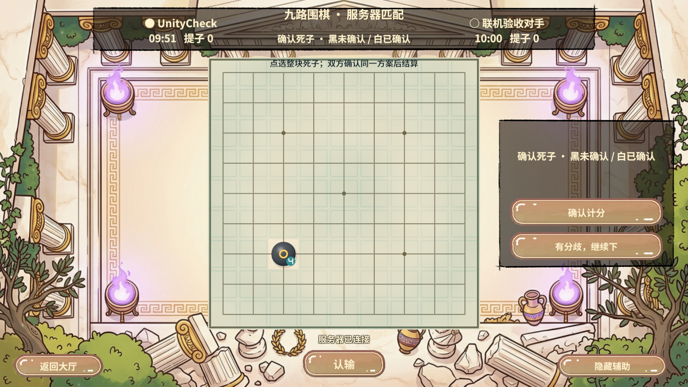
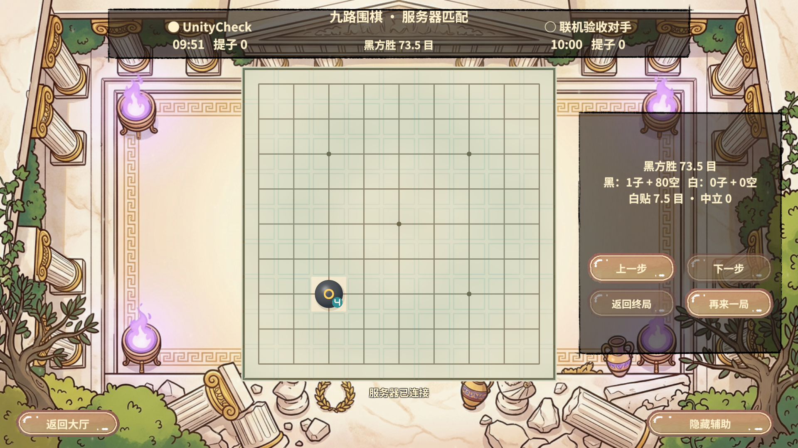
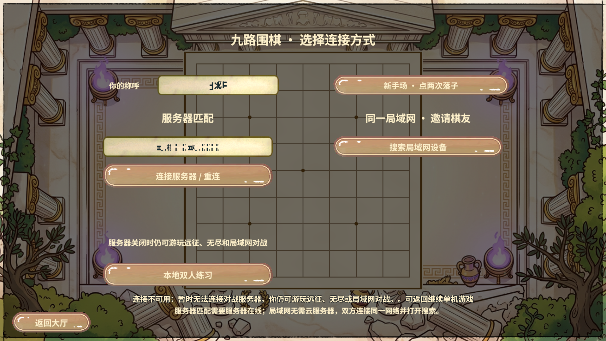
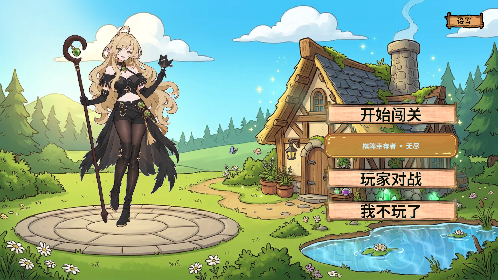
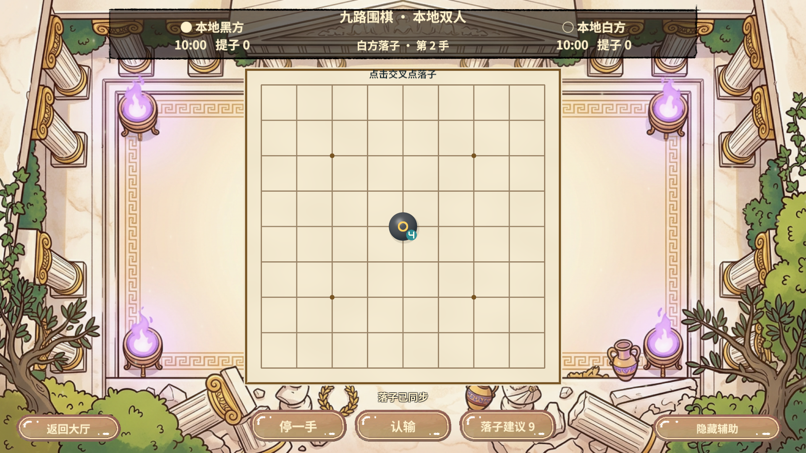

2026-11-06 · Unity 2022.3.15f1c1 · Fantasy 2026.1.2003 · Windows Editor / 真实AB / 本机真实TCP
完整对局、真实Socket断开重连、停服回退与本地可用性均已验证。计分阶段失败的根因为GoRelayProbe将ConfirmScore的ElapsedMs写成100，违反正式客户端非计时动作必须为0的契约；修正探针，不放宽棋谱校验。
Editor操作通过RevCLI connect / editor.refresh / editor.compilation / editor.play / runtime start / editor.stop。业务测试由Python启动项目RevMCP serve，通过真实MCP JSON-RPC在同一会话中执行rev_discover(target=game,query=pvp)、rev_call和rev_run。回归脚本、JSON与日志留在忽略目录.codex/work/pvp-fix-20261106。
通过计划：20261106-194645-201bf54c（终局）；20261106-194909-522ba808（停服后回退及本地可用）。真实Socket重连的对比断言在同一编排脚本内执行。
保留失败：原计分非法耗时已复现；20261106-194759-4814956f中停服拒绝及指纹保持已通过，但大厅Screen先变Home、transitioning仍为true，计划过早断言失败。修正计划为等待transitioning=false后核对Screen，重新执行通过，未修改业务过场以迎合测试。
Revolution的GameFlow、RevScope、RevLogic、RevUI、RevResManager与运行时自动化支持模式交接、资源加载、错误回退及正式入口回归；本轮未修改Revolution快照。旧Unity的Memory TCP接收兼容补丁继续由同版本内嵌Fantasy包承载。本机Unity+独立TCP对手证据不代表手机、跨设备LAN、生产公网或对抗安全验收。本轮未重建AB，无美术/Prefab变更；截图来自真实AB模式。GIF仅为真实关键状态截图串联，不是连续帧动画或帧率证据。
| 计划 | 动作 | 结果 |
|---|---|---|
| 九路围棋完整终局与重连验收 | pvp.state | 通过 |
| 九路围棋完整终局与重连验收 | runtime.screenshot | 通过 |
| 九路围棋完整终局与重连验收 | pvp.action | 通过 |
| 九路围棋完整终局与重连验收 | pvp.state | 通过 |
| 九路围棋完整终局与重连验收 | runtime.screenshot | 通过 |
| 九路围棋停服后连接失败回退与本地可用性验收 | pvp.state | 通过 |
| 九路围棋停服后连接失败回退与本地可用性验收 | runtime.screenshot | 通过 |
| 九路围棋停服后连接失败回退与本地可用性验收 | pvp.return | 通过 |
| 九路围棋停服后连接失败回退与本地可用性验收 | pvp.state | 通过 |
| 九路围棋停服后连接失败回退与本地可用性验收 | runtime.screenshot | 通过 |
| 九路围棋停服后连接失败回退与本地可用性验收 | pvp.enter | 通过 |
| 九路围棋停服后连接失败回退与本地可用性验收 | pvp.state | 通过 |
| 九路围棋停服后连接失败回退与本地可用性验收 | pvp.local | 通过 |
| 九路围棋停服后连接失败回退与本地可用性验收 | pvp.action | 通过 |
| 九路围棋停服后连接失败回退与本地可用性验收 | pvp.state | 通过 |
| 九路围棋停服后连接失败回退与本地可用性验收 | runtime.screenshot | 通过 |





收尾：运行期清理cleaned=true，返回Home且transitioning=false；Unity已停止Play，本次服务器及对手均退出。无ZIP、无Profiler录制，未提交推送。